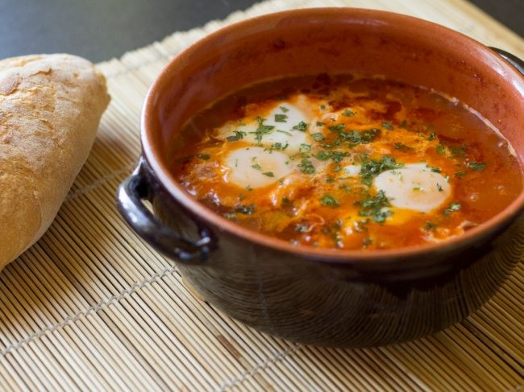

예전부터 건강식품으로 사랑을 받아온 달걀입니다. 건강식품으로써 다양한 성분들을 함유하고 있는 달걀입니다. 단백질, 올레인산, 리놀레산, 칼슘, 철, 마그네슘, 인, 칼륨, 아스코르빈산, 콜린, 나이아신 등등 우리 몸의 좋은 성분들이 풍부하게 함유되어 있는 계란입니다. 달걀은 1개 50g 기준으로 79kcal정도의 칼로리를 가지고 있다고 합니다. 칼로리에 비교해 많은 양의 단백질이 들어있어 다이어트 식품, 영양소가 균형 잡힌 식단에 좋은 달걀입니다. 달걀은 구입하실 때에는 껍질의 표면이 꺼칠꺼칠하고 무거운 것이 좋다고 합니다.
보관하실 때에는 둥근 쪽에는 가실이 있어서 세균에 노출되기 쉽기 때문에 뾰족한 곳이 아래로 향하게 하여 냉장보관 하시는 것이 좋다고 합니다. 보관일은 냉장보관 기준 1개월이라고 합니다. 달걀에는 바티민C 성분이 없기 때문에, 달걀을 섭취하실 때 비타민C가 함유되어 있는 식품하고 같이 섭취하시는 것이 좋다고 합니다.
#두뇌 발달 계란 노른자에는 레시틴과 콜린이 풍부하게 함유되어 있다고 합니다. 이 성분들은 공부를 하기 전 섭취를 하게 된다면 집중력 향상과 두뇌발달에 도움을 받을 수 있습니다. 달걀은 미국 MIT 공대 연구결과에 의하면 두뇌 동작과 감각 활동을 조절하고 통제하는 효능을 가지고 있다고 합니다. #항산화 효과 비타민, 단백질, 콜린 등의 성분들을 함유하고 있는 달걀은 각종 노인성 시각장애 예방과 콜라겐 섬유, 탄력섬유의 손상 및 색소침착 억제에 도움을 준다고 합니다. 이러한 항산화효과로 피부미용 목적을 위해 계란팩, 계란노른자팩을 하시면 좋다고 합니다.